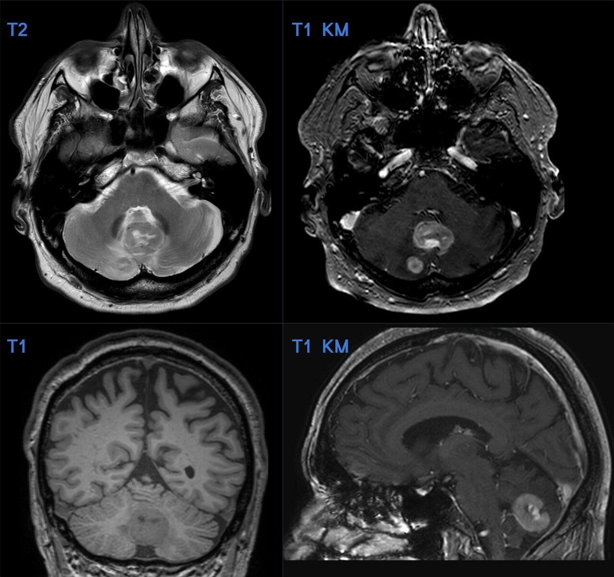

Ficha del catálogo
Metástasis cerebrales
- Sistema
- Nervioso
- Modalidad
- RM
- Región
- Encéfalo, unión corticosubcortical
- Dificultad
- Intermedio
Las metástasis cerebrales son las lesiones intracraneales malignas más frecuentes en el adulto y superan en número a los tumores primarios. Proceden sobre todo de pulmón, mama, melanoma, riñón y tubo digestivo. Pueden ser la primera manifestación de la enfermedad o aparecer durante el seguimiento oncológico.
Técnica
Resonancia magnética con contraste paramagnético, incluyendo secuencias volumétricas T1 poscontraste de alta resolución, FLAIR, difusión y secuencia sensible a susceptibilidad. La adquisición poscontraste debe realizarse con retraso suficiente para aumentar la detección de lesiones pequeñas.
Qué observar
- Lesiones múltiples en la unión entre sustancia gris y blanca
- Realce nodular o en anillo con pared relativamente regular
- Edema vasogénico desproporcionado al tamaño de la lesión
- Focos hemorrágicos, sugestivos de melanoma, riñón o tiroides
- Afectación de cerebelo y ganglios basales
- Realce leptomeníngeo asociado o compromiso del cráneo
Hallazgos
Múltiples lesiones redondeadas de predominio en la unión corticosubcortical y en territorios frontera, hipointensas en T1 e hiperintensas en T2, con realce nodular o anular. El edema vasogénico circundante suele ser llamativo en relación con el tamaño de la lesión. Las metástasis hemorrágicas muestran productos hemáticos en secuencias de susceptibilidad y las melanóticas pueden ser espontáneamente hiperintensas en T1.
Perlas
Ante una lesión única con realce en anillo, la combinación de localización corticosubcortical, edema desproporcionado y antecedente oncológico orienta a metástasis, mientras que la infiltración a través del cuerpo calloso orienta a glioma. La búsqueda dirigida de lesiones adicionales pequeñas cambia el manejo, ya que la carga lesional determina la estrategia radioterápica.
Diagnóstico diferencial
- Glioblastoma
- Lesión única infiltrativa con extensión por sustancia blanca y a través del cuerpo calloso, anillo grueso e irregular.
- Abscesos múltiples
- Centro con restricción marcada a la difusión, contexto febril o de foco infeccioso y anillo fino y liso.
- Enfermedad desmielinizante activa
- Lesiones periventriculares perpendiculares a los ventrículos, realce en anillo abierto y menor edema.
- Cavernomas múltiples
- Aspecto en palomita de maíz con anillo de hemosiderina, sin edema significativo ni realce relevante.
Simuladores
- Infartos embólicos múltiples subagudos con realce
- Espacios perivasculares prominentes en secuencias no contrastadas
- Malformaciones vasculares pequeñas de tipo capilar o venoso
Por modalidad
- TC
- Útil en urgencias para detectar hemorragia, hidrocefalia y efecto de masa, pero con baja sensibilidad para lesiones pequeñas.
- RM
- Es el método de elección por su sensibilidad para lesiones milimétricas, afectación leptomeníngea y caracterización del contenido hemorrágico.
Protocolo
Secuencia volumétrica T1 poscontraste con cortes submilimétricos, FLAIR, difusión y secuencia de susceptibilidad (se recomienda mantener el mismo protocolo en los controles para comparar de forma fiable).
Clasificación
Se describen según número, tamaño, localización y presencia de afectación leptomeníngea, parámetros que junto con el estado funcional y el control de la enfermedad sistémica guían la elección entre radiocirugía, radioterapia holocraneal o cirugía.
Errores frecuentes
- Explorar sin contraste y pasar por alto lesiones pequeñas
- Atribuir a metástasis un realce que corresponde a infarto subagudo
- No revisar las secuencias de susceptibilidad y omitir metástasis hemorrágicas

metástasis cerebrales unión corticosubcortical edema vasogénico realce nodular oncología resonancia con contraste